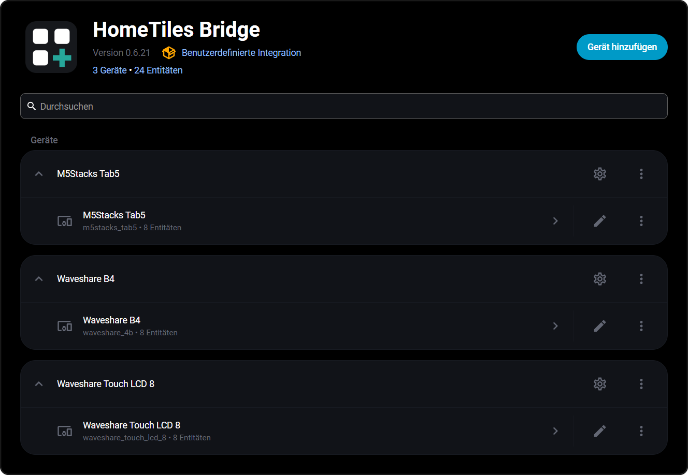

Bridge Integration
The HomeTiles Bridge is the Home Assistant side of the project: a custom integration that pushes entity states, icons, sensor history, weather forecasts, and energy data to the displays via MQTT, and executes the light/switch/media/scene commands coming back. Bridge v0.6.28 and newer provide the experimental local camera transport used by HomeTiles v0.6.3 and newer. Bridge v0.6.32 adds migration-safe entities for the local Hardware I/O announced by HomeTiles v0.6.4.
Every display appears as its own device under the integration — with its base topic and status entities — no matter how many panels you run:

Requirements
- Home Assistant 2025.11 or newer
- An MQTT broker configured in Home Assistant (see the setup guide)
- HomeTiles Bridge v0.6.28 or newer when Camera tiles are used
- HomeTiles Bridge v0.6.32 or newer when panel-local Switch or temperature assignments should appear as Home Assistant entities
Installation
Via HACS (recommended)
- HACS → Integrations → three-dot menu → Custom repositories
- Repository:
https://github.com/GalusPeres/HomeTiles-Bridge, category Integration, click Add - Search for HomeTiles Bridge in HACS and download it
- Restart Home Assistant
Updates arrive through HACS like for any other custom integration.
Manual
Copy the custom_components/tab5_lvgl folder from the repository into your
Home Assistant custom_components directory and restart Home Assistant.
Adding A Panel
Add the integration once via Settings → Devices & Services → Add Integration (search for HomeTiles Bridge):
| Field | Meaning |
|---|---|
| Base topic | MQTT namespace of the panel — must match the display's Device topic base (web admin → Settings → MQTT). Unique per panel. |
| HA prefix | Topic prefix for entity state publishing (default ha/statestream) — same on all panels and displays. |
| Device name / manufacturer / model | Optional metadata shown in the device registry. |
Additional panels are discovered automatically: every display announces itself over MQTT when it connects. The first announcement links up with your manually created entry; any further display gets its own integration entry without manual steps. A display that went missing (for example after being deleted in Home Assistant) can re-announce itself at any time via its on-device Settings → System → Pairing button.
Configuration
Open the integration entry and click Configure. Three sections:
Panel Settings
Base topic, HA prefix, and device metadata — same fields as above.
Entity Configuration
Select which entities the displays may use:
- Sensors — any entity whose state you want on sensor tiles
- Weather —
weatherentities for weather tiles/forecasts - Lights / Switches / Climate / Media players — controllable from the displays
- Cameras — sources for the experimental ESP32-P4 Camera tile
- Scenes & scripts — each selected entry gets an auto-generated alias
(used by scene tiles); you can also map aliases manually in the text box,
one
alias=entity_idper line
Entity selections are shared across all panels — every display can use every entity configured here.
Panel-local Hardware I/O is different: it is announced by the firmware and belongs only to that panel's Home Assistant device. It does not need to be added to this shared entity selection.
Local Hardware Entities
HomeTiles v0.6.4 can announce locally configured Switch outputs, onboard relays,
and DS18B20 inputs. Bridge v0.6.32 creates these dynamically as switch or
sensor entities on the correct display device.
The firmware keeps a stable hidden channel ID for MQTT topics and Home Assistant unique IDs while advertising a readable entity ID based on the device and channel name. During an upgrade the Bridge migrates known automatically generated IDs, including numeric suffixes from identical panels. IDs manually renamed in Home Assistant remain untouched.
Deleting an assignment removes its retained MQTT state and marks the old Home Assistant entity unavailable. Saving a new assignment causes the panel to re-announce its configuration; restarting Home Assistant is not required after the Bridge itself has already been installed and loaded.
Energy Dashboard
Enable electricity, gas, and/or water. The displays' energy tiles pull their statistics from the Home Assistant Energy Dashboard, so that must be configured first. These checkboxes are synchronized across all panel entries.
MQTT Topics Reference
For debugging with an MQTT client (topic layout, {id} = panel device id):
| Topic | Direction | Description |
|---|---|---|
<base>/stat/connected |
Display → HA | Connection status |
tab5_lvgl/config/{id}/bridge |
Display → HA | Device announcement, including local Hardware I/O |
tab5_lvgl/config/{id}/bridge/apply |
HA → Display | Full configuration push |
tab5_lvgl/config/{id}/bridge/icons |
HA → Display | Lightweight icon updates |
tab5_lvgl/config/{id}/history/* |
Both | Sensor history request/response |
tab5_lvgl/config/{id}/weather/* |
Both | Weather forecast request/response |
tab5_lvgl/config/{id}/energy/* |
Both | Energy data request/response |
<base>/cmnd/light |
Display → HA | Light control commands |
<base>/cmnd/switch |
Display → HA | Switch control commands |
<base>/cmnd/media |
Display → HA | Media player commands |
<base>/cmnd/climate |
Display → HA | Climate temperature/range, humidity, mode, preset, fan, and swing controls |
<base>/cmnd/scene |
Display → HA | Scene/script activation |
<base>/cmnd/camera |
Display → HA | Open/close an experimental camera session |
<base>/stat/camera |
HA → Display | Camera protocol, endpoint and status |
<base>/cmnd/io/{channel_id} |
HA → Display | Local Switch command (ON / OFF) |
<base>/stat/io/{channel_id} |
Display → HA | Retained local Switch or temperature state |
Entity states are published under <HA prefix>/<entity>/... by the bridge itself —
Home Assistant's MQTT Statestream integration is not required.
Experimental Camera Transport
When a Camera tile opens, the bridge resolves the selected Home Assistant
camera. Direct sources are transcoded with FFmpeg; snapshot-only cameras are
re-fetched and converted at their actual refresh rate. The resulting
display-sized JPEG frames use a local acknowledged TCP transport on the first
available port from 8124 through 8131. MQTT remains active for entity
updates and camera control, but video bytes are not sent through MQTT.
Allow the display to reach that port on the Home Assistant host. CPU usage depends on the input codec/resolution, requested frame rate and number of simultaneously open panels. Camera support is currently experimental.